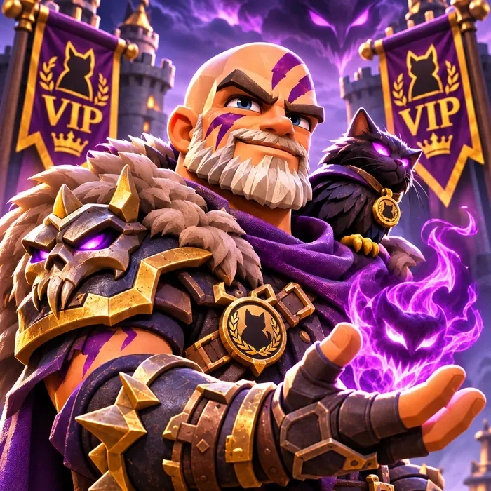
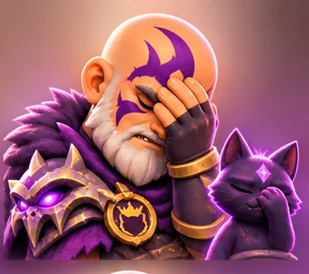

Omen & the Feline Flame
From battle plans to resource discipline, Omen brings the strategy. The Feline Flame keeps the warnings burning. Prepare smart, fight together, and save for KvK.

- Some mechanics are based on community testing rather than official developer formulas and may change with future patches.
- Specific numbers (percentages, point values, skill values) should be verified in-game before making major decisions.
- When in doubt, check the current in-game event description or community resources such as v2.kingshot.net.
Save These Items For KvK
- Speedups (General & Research)
- Truegold Dust - War Academy's KvK "Increase Power" stage draws on the same Dust as research; see the War Academy section for the exact timing pattern
- Resource packs
- Stamina
- Teleports
- Shields / Buffs
- Pet items
- Hammers / Widgets
- Gov Gear / Charms
🐾 Daily Terror Rewards - Build Your KvK Stockpile
Kingdom #1625 Daily Goal: 10 Terror Special Rewards + 50 Rally Participation Rewards. Don't overlook daily Terror rallies - they're a valuable source of resources, speedups, Satin, and other rewards that add up over time. With many alliance members running Level 8 Terrors, consistent participation makes a real difference in KvK preparation.
Your Daily Terror Checklist
- Lead 10 Terror rallies to collect your 10 daily special-reward opportunities
- Join up to 50 allied Terror rallies to max out your daily participation rewards
- Prioritize Level 8 Terrors when your alliance can defeat them reliably - higher-level Terrors generally give better rewards
- Enable Auto-Join to collect participation rewards while you're away
- Check your reward counters by selecting a Terror on the map and tapping the magnifying glass
- Save useful speedups, resource packs, and upgrade materials for the right KvK preparation phases
Why this matters for KvK: daily rewards look small, but they add up over weeks of consistent farming. An active alliance creates more chances for every member to strengthen their account and prepare for KvK without unnecessary spending.
Alliance strategy: lead your 10 daily rallies, help fill other members' rallies, and aim for all 50 participation rewards. Prioritize Level 8 whenever practical, and coordinate so everyone benefits.
⚠ Remember: the 10 special rewards and 50 participation rewards are separate daily limits - the 50 are not 50 more special-reward rolls. Joining rallies is generally stamina-free; leading uses stamina. Use naturally regenerated stamina for daily rallies and keep backpack stamina items in reserve for KvK.
Browse the Guide
City Building Priority
Key Tips
- Always have a building upgrading - idle builders waste time
- Use speed-ups on the longest upgrades, not short ones
- Complete Building missions for free speed-ups
- Hospital capacity should always exceed your total deployed troop count
- Coordinate with alliance: boost attack buildings before war season
Hero Database
Hero ▼Name & portrait |
Gen ▼Generation |
Troop ▼Army type |
Role ▼Primary use |
PvP ▼Player vs Player |
PvE ▼Player vs Environment |
Bear ▼Bear Hunt score |
F2P ▼Free-to-Play value |
Acquisition ▼How to obtain |
Status ▼Server availability |
|---|
Troop Formations & Training
Bear Hunt Formation (Standard)
Gen 4+ Players: 1 Infantry / 10 Cavalry / 89 Archers
Archer Lethality is the dominant damage stat in Bear Hunt. Stack Archers to maximize DPS. Infantry provides minimal troop losses due to positioning mechanics.
KvK / PvP Formation
Formation varies by your strongest hero type. Match your troop mix to your rally leader's bonuses. Pure Archer builds work well if your hero is Archer-focused (Quinn, Amadeus).
For the full formation cheat sheet, stat priorities, and casualty breakdown - see the Combat Mechanics section below.
Training Priority
- Always train your highest tier troops - Tier 4+ provide exponentially more power
- Never let barracks idle - queue troops constantly
- Balance training with hospital capacity to avoid permanent troop deaths
- Use Training Speed boosts during alliance training events for bonus rewards
- Wounded troops heal for free - always fill hospitals before logging off after battles
Combat Mechanics Deep Dive
How Combat Actually Works (Round-by-Round)
Combat in Kingshot is a hidden simulation - you only see the report, not the logic. Here is the actual sequence every battle follows:
- 1. Deployment: Troops spawn in order - Infantry → Cavalry → Archers
- 2. Target Selection: All troops focus the frontmost enemy line. Exception: 20% of Cavalry bypass the frontline every round to snipe Archers directly
- 3. Damage Resolution: Lethality vs. Health determines how many troops are removed
- 4. Line Collapse: When a line reaches zero, all attacks immediately retarget the next surviving line
- 5. Repeat: Attacker and Defender alternate until one side has zero troops
This explains why Infantry and Archers die first - Infantry absorb everything until they fold, while Archers take stray Cavalry charges. Cavalry ironically survive longest because they draw the least aggro until late rounds.
Stat Priority - What Actually Matters
Stat Investment Order
- 1st: Archer Lethality - fastest kills, shortens fights before attrition hits. Priority in Research Battle tree, Charms, and hero widgets
- 2nd: Infantry Health - keeps the frontline alive long enough for Archers to work. Buff HP, not Defense
- 3rd: Infantry Defense / Archer Attack - secondary layer once the top two are solid
- 4th: Cavalry - lowest ROI in the current patch; invest only after everything above is maxed
- Charms vs. Gear: Charms primarily boost Health and Lethality. Most Governor Gear covers Attack and Defense. Choose your upgrade path based on which stat tier you need next
Buff Math - Standard vs. Special (Critical Misconception)
Type A - Standard Buffs (Additive): Sources include Governor Gear, Charms, skins, Alliance research, personal research, and Alliance buildings. These simply add together: two 10% Attack buffs = 20% total.
Type B - Special Buffs (Multiplicative): Sources include hero abilities, exclusive widgets, Kingdom titles (King/Ministers), and consumable 12h/24h army boosts. These multiply on top of your Standard buff total.
Example: With 200% Standard buffs and 40% combined Special buffs, your effective bonus is 320% - not 240%. The stronger your Standard buffs, the bigger the Special buff multiplier becomes. This is why late-game whales scale so aggressively.
Debuffs work as negative Special buffs - disproportionately powerful against high-standard-buff players.
Rally Roles - Three Laws
- The Rally Captain's Build Is Everyone's Build - their heroes, research, skins, consumables, and Kingdom titles apply to the entire rally. Invest in your rally leaders first
- Joiners Bring Bodies, Not Buffs - joiners contribute troop count and their hero captain skill only. Focus on sending high-tier troops in the correct ratio. Do not burn consumables as a joiner
- Widgets only come from the rally leader - joiners do not contribute widget bonuses. A hero's widget only activates when that hero is leading the rally or garrison
- Flat skill bonuses stack; proc-based abilities do not add linearly - two "+25% Lethality" skills add to 50%, but two "40% mitigation" proc skills just give two separate 40% rolls, not 80%
Troop Formation Cheat Sheet
Casualty Types - Where Troops Actually Die
| Activity | Lightly Injured | Injured (Hospital) | Permanent Loss ☠️ |
|---|---|---|---|
| Hunting Beasts / Terrors | Nearly all | Very few | None |
| Attacking a Player City | Majority | Some | Yes - significant ☠️ |
| Defending Your City | Majority | Some | None |
| Sanctuary / Fortress | Majority | Some | None |
| Resource Tiles / Flags | Majority | Some | None |
| Level 1–3 Outposts | Most to nearly all | Very few to some | None |
| Level 4 Outpost ⚠️ | Majority | Some | Yes - both sides ☠️ |
- Level 4 Outposts are traps - both attacker AND defender can suffer permanent losses. Confirm the tooltip before committing troops
- City attacks and certain PvP structures can cause permanent troop losses - never attack a city unless you are prepared to absorb those losses
- Infirmary overflow = permanent deaths - once your hospital is full, Injured troops convert to permanent losses. Always free beds before a major war
Oasis Island
How the Resource Loop Works
- Fountain of Life: Core structure - upgrade it first and always. Higher levels unlock new building categories and boost passive essence generation.
- Reservoirs: Actively clear cacti to harvest hidden Water Essence chests. Upgrade to Level 4 ASAP to unlock a second worker and double clearing speed.
- Prosperity: Increased permanently by placing any decoration or building. Each decoration type has a cap - placing duplicates past the limit grants zero extra prosperity.
- Essence sources: Passive generation (Fountain + Reservoirs), treasure chests hidden in cacti, island quest rewards, and alliance member assistance bonuses.
Building Categories & Capability Table
| Building | Category | Troop Focus | Buff / Effect | Priority | Notes |
|---|---|---|---|---|---|
| Fountain of Life | Core | None | Unlocks building types • Boosts passive essence generation | ★ Must First | Upgrade before anything else - gates all other content |
| Reservoir | Core | None | Workers clear cacti to harvest Water Essence chests | ★ Must First | Rush to Lv.4 for 2nd worker - doubles clearing speed |
| Archer Tower / Ballista | Combat | Archer | Archer Attack • Archer Lethality | ★ High | Top Bear Hunt priority - directly boosts rally damage |
| Garrison Hall | Combat | All Troops | Troop Defense • Troop HP | ◆ Medium | KvK and defensive play; less impactful for Bear Hunt |
| Barracks / War Camp | Combat | Infantry Cavalry | Infantry & Cavalry Attack or HP buffs | ◆ Medium | Valuable for PvP formations; lower priority for Archer-focused accounts |
| Watchtower / Scout Post | Combat | All Troops | March Speed • Scout capacity | ◆ Medium | March speed matters in KvK and rally coordination |
| Command Hall | Capacity | All Troops | Squad Capacity • Rally Capacity | ★ High | More troops = more damage; critical for rally leaders |
| Library / Scholar's Hall | Development | None | Research Speed | ★ High | Compounds daily - highest long-term F2P value per essence spent |
| Workshop / Forge | Development | None | Construction Speed | ★ High | Every building upgrade benefits; excellent for mid-game acceleration |
| Training Ground | Development | All Troops | Troop Training Speed | ◆ Medium | Strong during Hall of Governors Train Troops stage |
| Expedition Outpost | Development | None | Hero Expedition Speed • Hero XP generation | ◆ Medium | Passive hero leveling; good for accounts still climbing hero tiers |
| Infirmary / Healing Tent | Development | All Troops | Healing Speed • Hospital Capacity | ◆ Medium | Reduces troop loss risk after All Out or KvK engagements |
| Resource Depot / Storehouse | Economy | None | Passive Food / Wood / Stone / Iron generation | ▸ Lower | Helpful early; deprioritize once combat buildings are unlocked |
| Gathering Post | Economy | None | Gathering Speed • Gathering Capacity | ▸ Lower | Mainly useful for dedicated farm accounts |
| Golden Sunset Lighthouse | Event-Exclusive | All Troops | Troop HP • Lethality | ◆ Role-Dependent | Powerful - critical for rally leaders; lower priority for joiners |
| Other Event Buildings | Event-Exclusive | All Troops | Varies by event (combat stats, capacity, or speed buffs) | ◆ Role-Dependent | Evaluate each by your playstyle - not always worth the essence cost |
| Decorations (Aesthetic) | Prosperity Only | None | Prosperity metric increase only - no stat buffs | ▸ Situational | Buy cheap ones early to complete quest lines for bonus essence rewards; avoid over-spending |
Island Tips
- Each decoration has a Type Limit - placing more than the cap gives zero extra prosperity or buffs. Check before buying duplicates.
- Clearing cacti from the left side first yields the highest density of treasure chests and essence early - community-verified optimal path.
- Place Reservoirs near dense cactus clusters; use cosmetic decorations to redirect worker pathing toward priority cacti.
- Recycling unwanted decorations returns 50% of their essence cost - useful for pivoting to better buildings without a full loss.
- Prioritize Development buildings (Research Speed, Construction Speed) before Combat buildings for most F2P accounts - the compounding effect outpaces direct stat gains early.
- Combat buildings (Archer Tower, Command Hall) become the priority once Development buildings are maxed or near-maxed.
- Coordinate alliance Island building events for collective bonuses, and upgrade during events that award Island-specific rewards.
Research Priority
Events Overview
Events are the fastest way to earn premium resources. Plan your upgrades, training, and research to align with event requirements - doing needed actions during events doubles their value. Event timing can vary by server age and creation date - always cross-reference with the in-game event panel.
Core Recurring Events
- Cesares Fury: Score points each phase via building upgrades, research, troop training, and gear crafting. Queue your longest upgrades to complete during each fury phase - save speed-ups to double the value.
- Swordland Showdown: Alliance vs Alliance territorial event. Coordinate rally timing with R4/R5 leaders. Prioritize resource tiles near alliance territory. Discord communication is critical.
- Growth Missions: Daily and weekly task lists. Complete them for significant free rewards - tasks align with normal gameplay.
- Gear Events: Craft and upgrade gear during these windows for bonus rewards. Stock materials in advance.
- Kingdom Events: Server-wide competitions. Focus on your contribution to alliance leaderboard placement.
Bear Hunt (Pitfall Event)
How It Works
- Scheduled by R4/R5 leaders - runs every 2 days with 2 trap slots
- Before the event: complete Intel Missions to gather Arrowheads and donate to the Bear Trap
- Event runs for exactly 30 minutes; final rally can be called 5 min before end
- Rewards are based on personal damage dealt and alliance total contribution
Starting a Rally
- Always use your 3 strongest heroes when starting a rally - priority heroes: Zoe, Jabel, Quinn, and Marlin
- Rally leader should be fully geared - gear only applies to the rally leader, not joiners
- Watch Discord for rally call timing - leaders coordinate two trap slots per event
Joining a Rally
- Place Chenko, Yeonwoo, Amane, or Amadeus in the first (left) slot
- If none of these heroes are available, send your march without heroes - sending the wrong heroes reduces the total damage of the entire rally
- Archers deal the most damage. Use one of these troop ratios (Infantry / Cavalry / Archer): 5/5/90, 10/10/80, or 10/20/70 - otherwise, just equalize your troops
- Join rallies as fast as possible when they open - every minute of damage counts toward your personal reward
- Players who do not follow these rules may be removed from rallies
Viking Vengeance
Biweekly alliance defense event - 20 waves of Viking attackers over ~40 minutes. Win by coordinating reinforcements and kill distribution across all active members, not just surviving individually.
Wave Targeting Rules
- Waves 10 and 20 hit the Alliance HQ - defend these with your strongest heroes and defensive marches
- Waves 7, 14, and 17 target online members only - be online for these windows
- If your city burns twice, you are out of targeting but can still score by reinforcing others
- To successfully defend a wave, you must kill at least 50% of the attackers
- Shields do NOT work against Viking attacks - do not waste them
The Three Member Non-Negotiables
- Empty your city before the event and send your troops to reinforce others - a full home city steals kills from reinforcements
- Do not heal mid-event unless you immediately send healed troops back out - healing returns troops home and disrupts distribution
- Do not extinguish fires mid-event - this disrupts allied scoring flow
Stamina Tips
- 24–48 hours before event: do NOT hunt world monsters or spend stamina on small events
- Save all stamina and stamina potions going into the event
- Pre-build march presets so you can join rallies instantly when timers open
- Claim alliance gifts during the event window to supplement stamina
Alliance Championship
Weekly alliance event - six alliances compete across five rounds. Members register into one of three lanes; the alliance that wins two of three lanes each round wins the round.
Member Basics
- Register into the lane your R4/R5 assigns you - do not switch lanes without leader approval
- When registering, use a garrison formation with Howard and Gordon and use a 60% Infantry / 40% Cavalry / 0% Archers formation - adjust only if lane captain says otherwise
- Only the first 20 strongest members per lane count toward the power score - still participate even if you are outside the top 20, as kills still count
- Follow buff instructions from your leader before registering - the alliance runs a single buff policy for the whole event
- Be ready to fight at round start time - early KOs set the tempo for the round
Tri-Alliance Clash
Event Schedule
| Phase | Timing | What Happens |
|---|---|---|
| Voting | Monday - Tuesday | Alliance members vote for preferred battle time |
| Sign-Up | Wednesday - Thursday | Register as a combatant or substitute for a legion |
| Matchmaking | Friday | System matches your legion against two other alliances |
| Battle | Saturday | 60-minute battlefield event |
Matchmaking
Battle Phases
-
Phase 1 - Preparation (0:00-3:00)R4/R5 finalize map marks and assignments.Your battle plan should already exist before this phase starts - use these minutes to confirm assignments, not debate strategy.
-
Phase 2 - Seize & Conquer (3:00-20:00)Main Players advance down their assigned lane and secure the first keypoint. Supporters take position behind them. Reaction Teams capture uncontested neutral buildings in the center.Don't abandon your lane because a fight elsewhere looks exciting - that's the fastest way to turn a stable map into a collapse.
-
Phase 3 - Garrison Occupation (20:00-40:00)Garrisons open and become major point sources. Special Commander Force becomes active, breaking through weak enemy lanes and disrupting backline structures. Reaction Teams reinforce lanes under pressure.Special Force should attack under-defended routes and backlines, not repeatedly smash into the enemy's strongest position.
-
Phase 4 - Temple Onslaught (40:00-60:00)The Temple of Tides opens, worth 1,800 points per minute. All lanes rotate toward the center in a coordinated push.Holding the Temple usually decides the match - begin positioning for this rotation before Phase 4 actually opens, not after.
Player Roles

⚠ Common MistakesCommunity Notes
- Pre-assign every player a lane, role, and job before battle starts.
- Lane discipline beats chasing exciting fights elsewhere on the map.
- Use Special Force to disrupt and force rotations, not to duel.
- Begin the Temple rotation before Phase 4 actually opens.
- Energy/buff management meaningfully affects long battles.
- Exact role-size splits (6/12/6/6/2) can flex with alliance size and turnout.
- Specific breakthrough routes vary by matchup and map draw.
Older community advice claimed putting strong players in substitute slots hides their power from matchmaking. Official Kingshot support has since confirmed substitutes are fully counted among the top 20 Squad Power used for matching - this guide uses the current official rule.
Swordland Showdown
Event Schedule
| Phase | Length | What Happens |
|---|---|---|
| Voting | 2 days | Members vote for a preferred battle time slot |
| Registration | 2 days | R4/R5 selects the battle time; up to 30 combatants + 10 substitutes register per legion |
| Matchmaking | 2 days | System assigns an opponent based on voted time and Alliance Power |
| Battle | 1 hour | Live battlefield event |
Matchmaking
Key Buildings
The Stored Points Mechanic
Battle Timeline
-
0:00 - 15:00 - Early ControlMove to assigned objectives immediately: Royal Stables, Bell Tower, and Sanctums are the priority opening targets. Establish garrisons and defensive zones while the Swordshrine is still locked.First-control bonuses matter - don't wait to spread out.
-
~15:00 - Swordshrine OpensThe Swordshrine, Hall of Reformation, and Mercenary Camp become available. Strongest players rotate toward the center while secondary teams keep holding Sanctums, Bell Tower, and Stables.Begin positioning for this rotation before the 15-minute mark, not after.
-
15:00 - 45:00 - Contest the CenterFight for the Swordshrine and other high-value structures. Attack enemy support players rather than their strongest defenders, and collect scattered points immediately whenever a building changes hands.Weakening an enemy's support network makes their garrisoned buildings fall faster than attacking their whale head-on.
-
45:00 - 60:00 - Final CalculationStop fighting on instinct and calculate what produces the most points before time runs out - sometimes that's holding the Swordshrine, sometimes it's a large scattered-point steal, sometimes it's uncontested undercellars.Undercellars are easy to forget but can add meaningful points late, especially for players who can't meaningfully affect whale-vs-whale fights at the center.
Player Roles
Healing & Movement
- Exit Heal: Tapping the scoreboard and leaving the battlefield instantly heals all your troops, but carries a 12-minute re-entry cooldown. Worth it early/mid-battle for a full reset; risky late, since it can effectively remove you from the rest of the event.
- Troops can't permanently die during Swordland, and the hospital can't fill - don't be afraid to fight, and don't feel pressured to burn every healing speedup near the end.
- Free teleport refreshes every 10 minutes normally, or every 5 minutes if your alliance controls Royal Stables. Use paid teleports for real repositioning, not convenience.
- Free March Speed accumulates passively throughout the event (roughly 25% per minute, capped at 10 stacks) - use it, it's free and event-only.
⚠ Common Mistakes
Community Notes
- Objective control beats chasing kills.
- Royal Stables and Bell Tower are extremely strong opening targets for the mobility and capture-speed advantage.
- First-control bonuses reward spreading out rather than stacking one building.
- Reinforcing a strong garrison is more efficient than random solo fights.
- Pre-assigned teams and clear communication substantially outperform improvised play.
- Exact defender/attacker/support ratios vary by alliance strength and opponent behavior.
- Deliberately giving up a building to bait a recapture and collect scattered points is a situational, higher-risk tactic.
Older community advice claimed substitute slots hide a player's power from matchmaking. Official Kingshot support confirms substitutes are fully counted among the top 20 Squad Power used for matching in Swordland Showdown, the same as Tri-Alliance Clash - this guide uses the current official rule.
Hall of Governors
What Scores Big Points
Hero Roulette spins are generally a high-value scoring activity during the Hero Development stage. Save all roulette tokens for that stage rather than spinning freely beforehand.
Troop training scales heavily by tier - high-tier troops earn dramatically more points per unit. Train during the Train Troops stage only.
Point values may vary by kingdom age and event version. Always verify current event rules in-game.
Member Stage Rules
- Construction & Research stages: Queue long upgrades to complete during the stage; use alliance help to shorten timers
- Hero Development stage: Hold all roulette tokens and hero shard ascensions until this stage opens - this stage typically rewards hero spending most heavily
- Train Troops stage: Train only during this stage; higher tier troops earn far more points per unit
- Gear & Charm stages: Stockpile upgrade materials in advance and spend them only when the correct stage is active
- Check with your R4/R5 before spending large resources - the alliance may be running a coordinated push that requires certain members to hold off
All Out (Kill Event)
Two-day PvP event running every few weeks. Points are earned by defeating or severely wounding enemy troops via city attacks, tile hits, or defending attacks. Points scale by troop tier - higher-tier enemies are worth more per kill.
Safe Scoring Strategy (Recommended for F2P)
- Keep a shield active whenever you are offline or not actively fighting - non-negotiable during peak hours
- Garrison troops in alliance structures when idle rather than leaving them in your city
- Scout enemy cities before attacking - check hospital capacity to estimate risk
- Respect your server's community-enforced rules (NAPs, territory restrictions, rally bans) - violating them invites large-scale retaliation
Recovery After Losses
Batch healing: Heal in smaller increments so alliance help can reduce timers efficiently, rather than burning speed-ups and gems on large single heal blocks. This is often the difference between stabilizing an account and quitting after a bad All Out.
Moonlit Promise
How It Works
- Radiant Wishes: Use Crescent Seekers to light lanterns and earn Crescent Emblems with multipliers (1x 60% / 2x 20% / 3x 10% / 5x 6% / 10x 4%)
- Ally Blessings: After lighting 30 lanterns, receive 1 Mythic Hero Shard and share 2 Crescent Emblems with members - up to 20 blessing receives per day (resets daily)
- Crescent Bazaar: Spend Crescent Emblems on Mythic/Lucky gear, Governor Gear Chests, Forge Hammers, Charm Designs, speed-ups, and emotes
- End-of-event: Unused Crescent Emblems and Seekers convert to food resources - spend down before the event ends
Shop Priority (F2P)
The shop does not reset daily, so plan your full-event purchase order rather than optimizing day-by-day. Community consensus: Forge Hammers are the highest-value F2P buy. Gear and charm-related items come next, especially if Hall of Governors is upcoming - buy now, but delay the actual upgrade until the correct HoG stage.
Alliance Coordination Protocol
- Set a daily "Blessings open" posting rule - members post in Discord after hitting the 30-lantern threshold so others can claim ally blessings before the daily cap
- Blessing limits reset daily - coordinate timing so members claim from as many active blessers as possible each day
- Set a daily target for mission completion - consistent daily play is the main limiter, not spending
- Post an end-of-event reminder to spend remaining currency before it converts to bread
True Gold Progression
Progression Phases at a Glance
Upgrade Cost Reference (Truegold per Building)
| Building | TG1 (×5) | TG2 (×5) | TG3 (×5) | TG4 (×5) | TG5 (×5) | Full TG1–5 Total | Unlocks |
|---|
Truegold Sources
| Source | Consistency | F2P Viable | Est. Amount | Priority | Notes |
|---|
Truegold Crucible - Daily Refinement
Unlocks at kingdom TG Level 5 (~Day 150). Free to build. No upgrades. Converts standard resources into Truegold via 5 daily refinements. Never skip a day - this compounds significantly over time.
Upgrade Priority Matrix
| Building / System | TG1–2 Priority | TG3–5 Priority | TG6–8 Priority | F2P Value | Combat Value | Stop Point | Notes |
|---|
Recommended Upgrade Order
F2P vs. Spender Strategy
- Focus exclusively on Town Center + one troop building type (your primary army)
- Never spread Truegold across all 3 troop buildings simultaneously - pick Barracks, Range, or Stable based on your hero
- Do all 5 Crucible refinements every day without exception - 10.5 TG/day compounds to ~3,800/year
- Stack Truegold from events before pushing a tier - save for the full 5-stage cost before starting
- Embassy and Command Center are low priority until TG3+ - troop power first
- Tempered Truegold (TG6+) is the great equalizer - F2P who never miss Super Refinement can keep pace with moderate spenders
- Rush Town Center TG3 first - unlocks T11 troop research and significantly widens the power gap
- Upgrade all three troop buildings (Barracks/Range/Stable) in parallel once TC TG3 is reached
- Embassy TG2+ for KvK reinforcement capacity - meaningful for alliance war impact
- Command Center TG upgrade for rally capacity - priority for rally leaders
- Avoid whale trap: buying raw Truegold packs before TG5 Crucible is inefficient - event TG has better pack value
- Tempered TG (TG6+) cannot be bought directly regardless of spend - Super Refinement caps apply to everyone equally
⚠ Common Mistakes
Long-Term Progression Roadmap
| Phase | Kingdom Age | TG Target | Primary Focus | Key Unlock | Bottleneck |
|---|---|---|---|---|---|
| Entry | Day 70–100 | TC TG1 | Town Center TG1 → primary troop building TG1 | T10 troops | Low Truegold income - event dependency |
| Early | Day 100–150 | TC TG2 | TC TG2 → push primary troop building to TG2 | T10 upgrades | Truegold scarcity - prioritize ruthlessly |
| Mid | Day 150–200 | TC TG3 + Crucible | Crucible opens. TC TG3 is the major milestone - enables T11 research | T11 troops + Crucible income | TG3 cost jump - 238 TG per sub-stage for TC |
| Growth | Day 200–310 | TG4–TG5 | Push all priority buildings to TG5. Crucible provides steady daily income | Max T11 troops | Resource cost for Crucible refinements |
| Advanced | Day 310+ | TG6–TG8 | Tempered Truegold era begins. Super Refinement weekly cap controls pace for everyone | T12+ troops | Weekly Tempered TG cap - affects all players equally |
War Academy Strategy Guide
Live NowGetting Started - Your First Priorities
Truegold Dust Exchange Rates
| Exchange | Rate | Daily Cap | Max Dust/Day |
|---|---|---|---|
| Gold → Dust | 5,000 Gold = 1 Dust | 20 exchanges | 20 Dust |
| Truegold → Dust | 10 Truegold = 13 Dust | 200 exchanges | 2,600 Dust |
Interactive Priority Table
| Priority | Research | Purpose | Combat Value | Dust Efficiency | Timing | Recommended For | Notes |
|---|
Progression Roadmap
-
Phase 1Goal: Unlock T11 as quickly as possible.
- Follow prerequisite nodes only.
- Ignore optional branches.
- Spend the minimum Dust possible.
- Unlock T11.
Reason: Every unnecessary research delays T11. -
Phase 2Max your primary troop.Priority OrderAttack↓HP↓Defense↓Lethality↓HealthComplete one troop before investing heavily in another.
-
Phase 3Improve rally performance.Suggested research:
- Rally Capacity
- Rally Damage
- Rally Support
- March Improvements
- Advanced Combat Nodes
Best suited for Rally Leaders. -
Phase 4Improve second troop.Repeat the same priority order:Attack↓HP↓Defense↓Lethality↓Health
-
Phase 5Complete remaining research.Focus on lower-impact combat improvements and niche nodes after the primary combat path is complete.
Player Role Recommendations
Resource Efficiency Guide
| Research | Combat Gain | Dust Efficiency | Rating |
|---|---|---|---|
| T11 | ★★★★★ | ★★★★★ | S |
| Attack | ★★★★★ | ★★★★★ | S |
| HP | ★★★★★ | ★★★★☆ | S |
| Defense | ★★★★☆ | ★★★★☆ | A |
| Lethality | ★★★★☆ | ★★★★☆ | A |
| Health | ★★★★☆ | ★★★★☆ | A |
| Secondary Troops | ★★★☆☆ | ★★★☆☆ | B |
| Third Troop | ★★☆☆☆ | ★★☆☆☆ | C |
⚠ Common Mistakes
Community Notes
- Save research speedups before War Academy unlocks.
- Save Gold for Truegold Dust exchanges.
- Focus on one troop branch before expanding.
- Attack and HP research provide the highest early value.
- Truegold Dust becomes the primary bottleneck.
- T11 troops offer significant power increases but require substantial investment.
- Plan research around KvK where possible.
- Infantry is often recommended first for rally leaders.
- Some cavalry-focused players prioritize Cavalry first.
- Heavy spenders may rush multiple troop branches.
The primary disagreement is whether players should rush War Academy research immediately or continue prioritizing broader Truegold progression before investing heavily. The stronger consensus is that F2P and low spenders should avoid rushing at the expense of overall account growth.
Full Research Tree
| Tier | Node | Effect | Levels |
|---|---|---|---|
| 1 | Truegold Battalion (Archer) | +Deployment Capacity | 5 |
| 2 | Truegold Bracers | +Archer Health | 8 |
| 2 | Truegold Bows | +Archer Lethality | 8 |
| 3 | Truegold Legionaries (Archer) | +Rally Capacity | 12 |
| 4 | Truegold Arrows | +Archer Attack | 12 |
| 4 | Truegold Vests | +Archer Defense | 12 |
| 5 | Truegold Archer | Unlocks T11 Archer | 1 |
| 6 | Truegold Archer Healing | Reduces healing cost | 10 |
| 6 | Truegold Archer Aid | Reduces healing time | 10 |
| 6 | Truegold Archer Training | Reduces training cost | 10 |
| Tier | Node | Effect | Levels |
|---|---|---|---|
| 1 | Truegold Battalion (Infantry) | +Deployment Capacity | 5 |
| 2 | Truegold Shields | +Infantry Health | 8 |
| 2 | Truegold Blades | +Infantry Lethality | 8 |
| 3 | Truegold Legionaries (Infantry) | +Rally Capacity | 12 |
| 4 | Truegold Mauls | +Infantry Attack | 12 |
| 4 | Truegold Plating | +Infantry Defense | 12 |
| 5 | Truegold Infantry | Unlocks T11 Infantry | 1 |
| 6 | Truegold Infantry Healing | Reduces healing cost | 10 |
| 6 | Truegold Infantry Aid | Reduces healing time | 10 |
| 6 | Truegold Infantry Training | Reduces training cost | 10 |
| Tier | Node | Effect | Levels |
|---|---|---|---|
| 1 | Truegold Battalion (Cavalry) | +Deployment Capacity | 5 |
| 2 | Truegold Farriery | +Cavalry Health | 8 |
| 2 | Truegold Charge | +Cavalry Lethality | 8 |
| 3 | Truegold Legionaries (Cavalry) | +Rally Capacity | 12 |
| 4 | Truegold Lances | +Cavalry Attack | 12 |
| 4 | Truegold Platecraft | +Cavalry Defense | 12 |
| 5 | Truegold Cavalry | Unlocks T11 Cavalry | 1 |
| 6 | Truegold Cavalry Healing | Reduces healing cost | 10 |
| 6 | Truegold Cavalry Aid | Reduces healing time | 10 |
| 6 | Truegold Cavalry Training | Reduces training cost | 10 |
Master Training Academy Guide
Journey Systems Overview
- Primary discovery system for finding new Masters
- Generates encounters and Master Affinity progress
- Auto Journey unlocks after completing 50 Realm Journeys
- Safe to spend freely - Journey Supplies do not affect KvK scoring
- Unlocks after completing 60 Realm Journeys
- Allows targeted progression for specific discovered Masters
- Community recommends using for Pan and Roman priority progression
- Adventure Supplies have no storage cap - bank them strategically
Master Resources at a Glance
✅ Safe to Spend Freely
These resources do not contribute to KvK scoring. Spend them as needed without concern for event timing.
⚠ KvK-Sensitive - Hold During Prep Windows
These resources score in KvK prep events. Coordinate spending timing with your R4/R5 leadership. Emblems are a significant bottleneck - treat them as a gated resource.
Priority Order by Player Type
New Masters (Nov 9): Isnor vs. Aena
- Isnor is the Eternity's Reach specialist; Aena is the caravan specialist.
- Both have event-restricted benefits - neither is a universal Bear Trap or KvK combat upgrade.
- Isnor-over-Aena comes mainly from one detailed October 4, 2026 guide using in-game skill screens - persuasive, but not yet backed by broad independent player comparisons.
- Isnor's Copper Ore: one guide calculates up to 7.2 million per 24 hours at skill Lv.10 - a mathematical rate, not a verified continuous reward outside the event.
- Aena's Elite Strongboxes may be valuable, but no reliable comparison establishes their return per Manuscript against Isnor's Charm rewards.
- Isnor first is a reasonable default, not a universal rule - extremely active caravan players may get more practical value from Aena.
Master Breakpoint Reference Table
| Master | Role | Key Skill(s) | What It Unlocks | Priority Breakpoint | Notes |
|---|---|---|---|---|---|
| Valora | Bear Hunt | Weapon Obsession | Additional Forgehammer rewards from Bear Hunt | Unlock Weapon Obsession ASAP | Widely considered Valora's highest-priority skill. Forgehammers are heavily gated - every additional source matters. |
| Valora | Bear Hunt | Dance of the Hunt | Increased Raging Bear Rally Squad Capacity | Strong for active Bear Hunt players | Directly scales alliance Bear Hunt output. Priority for combat-active alliances. |
| Valora | Bear Hunt | Leader By Example | Extra Enhancement XP Parts from Bear Hunt | Secondary priority after Weapon Obsession | Valuable for gear progression. Lower urgency than Weapon Obsession. |
| Pan | Economy | Falconer | Passive economy scaling (exact values: UNKNOWN) | Primary Pan build target | Core Pan progression skill per community consensus. Falconer is the recommended early build focus. |
| Pan | Economy | Efficient Reserves (Expertise) | Reserve Chests from gathering - may contain Truegold | Passive - activates at unlock | Daily reward limit applies. Compounds over time - the earlier Pan is unlocked, the more Reserve Chests accumulate. |
| Roman | Arena / Combat | Teacher of Champions | Combat progression scaling (exact values: UNKNOWN) | Primary Roman build target | Community-identified core Roman skill. Better value for Arena-active, combat-focused players. |
| Roman | Arena / Combat | Star Belligerent (Expertise) | Chance for Arena Star Chests - may contain Mythic Shards & Forgehammers | Passive - activates at unlock | Long-term competitive value. Higher unlock cost makes Roman a delayed priority for F2P. |
| Cassia | Rally / Battle | Recruiter In Chief | Squad scaling (exact values: UNKNOWN) | Critical for rally leads | Primary Cassia build target. High investment ceiling - most impactful for spenders and rally-focused accounts. |
| Cassia | Rally / Battle | Horn of Valor (Expertise) | Increases Squad Size Limit | Passive - activates at unlock | Directly benefits rally leads. Cassia is the top-priority Master for rally-focused spenders. |
| Guinevere | Swordland Showdown | Holy Sword Domain | Rally Capacity, Lethality, Health, Free Healing, and Relic Coin bonuses (Swordland/Summit League scoped) | High priority for Swordland-active players | 5th Master. Recommended investment: 5-star. Best for late-game players who contest Swordland Showdown and Summit League. |
| Wilson | Alliance Events | Trade Decree (Expertise) | Alliance Shop discount and Personal Activity Triumph Chest boost | Passive - activates at unlock | 6th Master. No combat stats - value comes from steady scoring across Alliance Mobilization, Championship, Viking Vengeance, and Brawl. |
| Isnor | Eternity's Reach / Charms | Old Hand (Expertise) Backchannels Unexpected Benefits | Passive Copper Ore and Charm Guide benefits through Backchannels | Affinity Lv.40 | New Nov 9, 2026. Lv.40 is an unlock breakpoint, not a recommendation to immediately max the skill. |
| Aena | Merchant Empire / Caravans | Beneficient Mogul (Expertise) Trading Ace Delivery Drive | Guaranteed Legendary Caravan progression through Trading Ace | Affinity Lv.40 | New Nov 9, 2026. Lv.40 is an unlock breakpoint, not a recommendation to immediately max the skill. |
Master Profiles
 ▼
▼
Valora is the first Master players encounter - she is guaranteed as your starting unlock. Her kit is built around Bear Hunt optimization, making her universally valuable for any alliance that actively hunts bears. Her Weapon Obsession skill is widely considered one of the strongest passive generators in the game due to Forgehammers being a critical bottleneck resource.
Unlock priority: Weapon Obsession first. Additional Forgehammer generation from Bear Hunt is the most impactful passive you can unlock.
- PvE: S-tier value. Bear Hunt is Valora's specialty - all key skills amplify Bear Hunt output directly.
- PvP: Indirect. Rally capacity via Dance of the Hunt and Savage Advantage adds meaningful scaling for alliance combat.
- F2P players unlock Valora naturally via Journey Supplies - no Adventure Supplies needed early
- Prioritize Weapon Obsession skill training as your first shared queue investment
- Economy-first accounts can delay Valora advancement in favor of Pan - but unlock her naturally via Realm Journey alongside Pan
- Strong long-term value: Forgehammers never lose importance at any stage of progression
- Spending Master Emblems on Valora before KvK prep windows close - hold Emblems until timing is safe
- Skipping Weapon Obsession in favor of rally capacity skills - Forgehammers are the higher long-term value
- Using Adventure Supplies on Valora early when Pan/Roman give higher targeted value from Lostlands Journey
- Pairs directly with active Bear Hunt participation - the more hunts your alliance runs, the more Valora generates
- Weapon Obsession rewards stack alongside Forge event timing for maximum gear push efficiency
- Dance of the Hunt synergizes with high-capacity rally leaders during large alliance Bear Hunt events
 ▼
▼
Pan is widely considered the strongest F2P economy Master. Her Efficient Reserves expertise generates Reserve Chests from gathering activity - and those chests can contain Truegold. The value compounds daily. Most F2P community strategies list Pan as the highest-priority first targeted investment using Adventure Supplies in Lostlands Journey.
Falconer is Pan's core build priority per community consensus. Exact scaling values are unverified - train it early in the shared queue once Pan is unlocked.
- PvE: High - gathering-based passive income. No active combat required.
- PvP: Indirect. Pan's economy output funds upgrades and gear that amplify PvP capability over time.
- Unlock Pan as early as possible - every day without her Efficient Reserves passive is passive income lost
- Use Adventure Supplies in Lostlands Journey to target Pan discovery after 60 Realm Journeys
- Pan's value is account-wide - she benefits every player type, not just gatherers
- Do not require deep advancement to generate value - even early unlock stages provide meaningful Reserve Chest income
- Delaying Pan discovery by spending Adventure Supplies on other content before Lostlands Journey unlocks
- Spending Master Emblems on Pan during KvK prep windows - hold Emblems, just unlock first
- Underestimating how much Truegold accumulates from Reserve Chests over hundreds of days
- Reserve Chest Truegold feeds directly into Truegold building progression - tight synergy with TC and troop building upgrade timelines
- Higher gathering activity means more chest generation - active tile farmers benefit most
- Pairs well with economy-focused development accounts that prioritize resource efficiency
 ▼
▼
Roman is the Arena specialist Master. His Star Belligerent expertise gives a chance to receive Arena Star Chests after Arena battles - chests that may contain Mythic Shards and Forgehammers. Roman is considered more resource-intensive than Pan or Valora and is better suited for advanced or combat-focused accounts. F2P players typically unlock Roman after Pan is established.
Teacher of Champions is the community-identified primary build target. Exact skill values are unverified - invest in it as your primary Roman queue slot once unlocked.
- PvP: Strong - Arena is an active competitive system. Roman directly rewards Arena participation with progression resources.
- PvE: Indirect - Mythic Shards and Forgehammers from Arena Star Chests feed into gear, which amplifies PvE output.
- Usually unlocked after Pan - prioritize Pan first for F2P accounts
- Higher value for players who are active in Arena combat
- Often delayed by F2P players due to higher resource costs relative to Pan/Valora
- Spenders and competitive PvP accounts should elevate Roman priority above Valora
- Rushing Roman before Pan on F2P accounts - Pan's economy passive is more valuable early
- Neglecting Arena activity after unlocking Roman - his expertise only generates chests when you actually fight in Arena
- Over-investing Emblems on Roman during KvK prep - coordinate spend timing with leadership
- Star Belligerent scales with Arena activity - the more you fight, the more chests you can generate
- Mythic Shard rewards accelerate hero development for competitive PvP builds
- Pairs well with combat-focused hero investment strategies
 ▼
▼
Cassia is the rally-focused Master built for late-game combat scaling. Her Horn of Valor expertise increases Squad Size Limit, which is a meaningful multiplier for rally leaders who need every troop slot. She has a high investment ceiling and is the top priority for spenders and R4/R5 rally leads. Lower urgency for F2P accounts in early and mid game.
Recruiter In Chief is Cassia's primary build target. Exact values are unverified - it is the community-identified core progression goal for Cassia-focused accounts.
- PvP: S-tier for rally leads - Squad Size Limit directly increases the power ceiling of every rally the alliance launches.
- PvE: Moderate - Squad capacity helps in Bear Hunt rally coordination but Cassia is primarily a PvP investment.
- Deprioritize for F2P until Pan and Valora are well-established
- High impact for alliance leadership positions - if you are a rally lead, elevate Cassia sooner
- More relevant in advanced kingdoms where combat is the primary competitive activity
- Investment scales well for spenders - high ceiling compared to economy-focused Masters
- Rushing Cassia as a first investment on F2P accounts - economy Masters pay back far faster early
- Assuming Horn of Valor activates before Cassia is actually unlocked - the expertise passive requires the unlock
- Spending limited Emblems on Cassia before safer spending windows open post-KvK
- Directly synergizes with alliance rally culture - the stronger your rally program, the more Cassia matters
- Horn of Valor stacks with Command Center TG upgrades for maximum rally squad size
- Pairs best with late-game combat heroes (Amadeus, Petra, and Gen 3+ additions)
 ▼
▼
Guinevere is the 5th Master, built around the Holy Sword Domain theme. Her specialization covers Swordland Showdown, Summit League, Rally Capacity, Lethality, Health, Free Healing, and Relic Coin bonuses. Recommended investment: 5-star. Best for late-game players.
- PvP: High - Swordland Showdown and Summit League combat buffs, Lethality, and Health are directly combat-facing.
- PvE: Lower priority outside of Swordland-adjacent content.
- Best for late-game players who contest Swordland Showdown and Summit League regularly
- Free healing during Swordland reduces recovery costs for active Swordland participants
- Relic Coin bonuses add ongoing value on top of the combat-focused kit
- Investing heavily in Guinevere without regular Swordland Showdown or Summit League participation
- Spreading Emblems evenly across all Masters instead of prioritizing Guinevere for a Swordland-focused account
- Pairs with alliance Swordland Showdown coordination and Summit League pushes
- Relic Coin and Rally Capacity bonuses support sustained Swordland engagement
 ▼
▼
Wilson is the 6th Master, titled the Royal Herald. Unlike Guinevere's combat focus, Wilson provides no combat stats - instead he multiplies points and rewards across Alliance Mobilization, Alliance Championship, Viking Vengeance, and Alliance Brawl. His Trade Decree passive discounts the Alliance Shop and boosts Personal Activity Triumph Chest rewards.
Trade Decree reduces Alliance Shop prices by 5% and increases Personal Activity Triumph Chest rewards by 20%. Additional skills boost scoring and rewards across Alliance Mobilization, Alliance Championship, Viking Vengeance, and Alliance Brawl - exact skill values unverified; check in-game.
- Unlocks the same way as other Masters via Realm Journey / Lostlands Journey
- Best prioritized by alliances that are consistently active in Alliance Mobilization, Alliance Championship, Viking Vengeance, and Alliance Brawl
- No single dramatic combat payoff - value comes from steady, recurring alliance-event returns rather than one breakpoint
- Alliance-event-focused accounts and R4/R5 leadership tracking alliance-wide scoring
- Accounts that want steady Alliance Shop savings and Personal Activity Triumph Chest value
- Lower priority for accounts that skip most Alliance Mobilization/Championship/Brawl participation
 ▼
▼
Isnor specializes in Eternity's Reach, providing event-specific Squad Lethality and Health, additional deployment capacity, faster recovery, increased Frontier Skill experience, and Copper Ore-based Charm rewards. He offers both immediate event performance and account-progression materials.
His combat bonuses are valuable in Eternity's Reach, but they are not universal PvP, KvK, or Bear Trap bonuses.
| Skill | Effect at Lv.1 | Effect at Maximum |
|---|---|---|
| Old Hand (Expertise) | +2% Lethality and Health | +30% each at Lv.11 |
| Frontier Master | +5% XP from Cesares Guards | +50% XP |
| Survival Skills | +5,000 deployment capacity; 6% faster Hero recovery | +50,000; 60% faster recovery |
| Unexpected Benefits | 6 Charm Designs per 200K Copper Ore | 60 Charm Designs |
| Backchannels | 500 Copper Ore/min; 10 Charm Guides per 200K Ore | 5,000/min; 100 Guides |
| Affinity | Stage | Unlock |
|---|---|---|
| Lv.1 | Stranger | Old Hand expertise becomes active |
| Lv.10 | Acquaintance 1 | Frontier Master unlocks |
| Lv.20 | Acquaintance 2 | Survival Skills unlocks |
| Lv.30 | Acquaintance 3 | Unexpected Benefits unlocks |
| Lv.40 | Casual 1 | Backchannels unlocks - major economic milestone |
- Unlock Isnor and start progressing his Affinity through your existing Journey system
- Reach Affinity Lv.10 for Frontier Master if you regularly farm Cesares Guards
- Work toward Lv.30 for Charm Design rewards
- Target Lv.40 to activate Backchannels, the main long-term resource skill
- Train Backchannels and Unexpected Benefits based on how often you play Eternity's Reach, while preserving your established high-priority Master upgrades
- For active Eternity's Reach players, unlocking his resource skills can matter more than pushing every skill to maximum
- Preserve Master Manuscripts and Emblems for the appropriate KvK preparation phases
- Assuming the Lethality bonus works in Bear Trap
- Treating Copper Ore income as a permanent 24/7 kingdom resource
- Abandoning established Pan or Valora investments simply because Isnor is newer
- Eternity's Reach and Frontier Skills
- Charm upgrading and Copper Ore farming
- Your existing Eternity's Reach strategy
 ▼
▼
Aena specializes in Merchant Empire caravan activities. Her skills reduce caravan travel time, improve plunder rewards, provide protection against lost cargo, generate Elite Strongboxes, and eventually guarantee Legendary Caravans.
Her Attack/Defense expertise is restricted to caravan raids. She is not a general PvP or Bear Trap combat Master.
| Skill | Effect at Lv.1 | Effect at Maximum |
|---|---|---|
| Beneficient Mogul (Expertise) | +2% Squad Attack and Defense in raids | +30% each at Lv.11 |
| Shortcuts | 2% shorter trips; +1 free refresh | Additional scaling requires verification |
| Finder's Keepers | 10% chance for extra cargo after a successful raid | 100% chance |
| Delivery Drive | Chance to recover raided cargo | Elite Strongboxes unlock at skill Lv.6 |
| Trading Ace | Guaranteed Legendary after 12 completed escorts | After 4; +1 daily caravan at Lv.10 |
| Possible Reward | Quantity |
|---|---|
| Gems | 1,000 |
| Truegold | 5 |
| Mythic General Hero Shard | 1 |
| Artisan's Vision | 2 |
| Charm Design | 2 |
| Charm Guide | 2 |
| Forgehammer | 1 |
| Affinity | Stage | Unlock |
|---|---|---|
| Lv.1 | Stranger | Beneficient Mogul expertise active |
| Lv.10 | Acquaintance 1 | Shortcuts unlocks |
| Lv.20 | Acquaintance 2 | Finder's Keepers unlocks |
| Lv.30 | Acquaintance 3 | Delivery Drive unlocks |
| Lv.40 | Casual 1 | Trading Ace unlocks - Legendary Caravan progression |
- Unlock Aena if you regularly complete Merchant Empire caravans
- Prioritize progress toward Affinity Lv.30 to access Delivery Drive
- Advance Delivery Drive to skill Lv.6 to unlock Elite Strongbox rewards
- Target Affinity Lv.40 for Trading Ace, particularly if you consistently use all daily escorts
- Consider Trading Ace Lv.10 only if the extra daily caravan and improved Legendary Caravan frequency justify the Manuscript cost
- Active daily caravan players benefit most
- Occasional caravan users should invest in higher-impact Masters first
- Assuming the raid buff applies to KvK
- Confusing the Affinity Lv.40 unlock with Trading Ace Lv.10
- Spending significant Manuscripts before confirming how often you run caravans
- Merchant Empire and Alliance Brawl caravan objectives
- Hero-shard income, Truegold, and Charm materials
KvK Resource Management
- Journey Supplies - Realm Journey fuel, regenerates daily, no KvK impact
- Adventure Supplies - Lostlands Journey fuel, no storage cap, safe to bank
- Master Gifts - Leveling resource, no KvK scoring contribution
- Master Emblems - Score heavily in KvK prep. Coordinate timing with R4/R5 before spending
- Master Manuscripts - High-value skill upgrade resource. Hold during scoring windows
- Master Skill Speedups - Accelerate skill training. KvK-sensitive - confirm timing before using
⚠ Common Mistakes
Long-Term Master Progression Roadmap
| Phase | Kingdom Age | Primary Focus | Key Targets | KvK Note |
|---|---|---|---|---|
| Unlock | Day 101–114 | Academy building opens. Valora settles. Begin Realm Journeys immediately. | Start Journey Supply daily loop. Discover Pan via Lostlands after 60 Journeys. | Journey Supplies safe to spend freely. |
| Early | Day 115–160 | Unlock Pan via Lostlands Adventure Supplies. Queue Weapon Obsession (Valora) in shared skill slot. | Pan discovered. Valora Weapon Obsession training started. Gifts spent freely. | Hold Emblems and Manuscripts until KvK prep clears. |
| Mid | Day 160–250 | Advance Pan (Falconer). Unlock Roman via Lostlands. Cassia discovery begins. | Pan Falconer trained. Roman discovered. Reserve Chests generating Truegold. | Coordinate Emblem spending with R4/R5 - safe windows open between KvK events. |
| Late | Day 250+ | Deep advancement on Pan and Valora. Cassia priority for rally leads. Roman for arena-active players. | All Masters discovered. Affinity and Manuscript investment during safe spending windows. | Full KvK coordination required for Manuscript and Emblem deployment. |
| Expansion | Day 190–250 | Guinevere (5th Master) and Wilson (6th Master) become available. Prioritize Guinevere if actively contesting Swordland Showdown/Summit League; Wilson for alliances active in Mobilization, Championship, Viking Vengeance, and Brawl. | Guinevere Holy Sword Domain unlocked. Wilson Trade Decree unlocked. | Coordinate Emblem/Manuscript spend on the newer Masters with R4/R5 same as Pan/Roman/Cassia. |
| Gen 5 Expansion | Nov 9, 2026 | Isnor and Aena become available. | Isnor Affinity Lv.40 as the primary long-term target; Aena Lv.30-40 for active caravan players. | Save Master Emblems, Manuscripts, and training speedups for scoring windows where applicable. |
Kingdom vs Kingdom (KvK)
Member Survival Rules
- Shield up whenever you are offline or not actively fighting - unshielded cities are easy targets during KvK
- Keep troops garrisoned or in hospital when you log off during active KvK phases
- Gather on your own server tiles before KvK starts - cross-server gathering resets when you cross over
- Stack near your alliance zone - solo cities far from allies get picked off first
- Scout before attacking - check hospital capacity, troop count, and shield status on any target
- Follow rally call timing from your R4/R5 - solo attacks rarely crack strong cities and waste troops
Eternity's Reach
Stage-based solo event that awards Charm Items - the primary resource for Charm upgrades, which provide massive late-game combat stat multipliers. Prioritize this event for long-term power growth.
Primary Strategy - Eternity's Reach Event Summary (Solo)
- Skill Tree: Right → Right → Left → Left → Right.
- Copper Strategy: Occupy a vein every 60s, recall immediately, and keep killing guards.
- Outburst Tactic: Use your 5th skill for speed, rush to occupy Fracture Veins as soon as they appear.
- Timeline: Gold first.
Stage Strategy
Use your strongest combat heroes. Focus on clearing stages before the event timer expires. Attempt stages daily.
Hero level and star upgrades become critical. Pair Lethality heroes with Archer-boosting secondary heroes.
Requires maxed heroes and high Charm bonuses. Top-tier F2P players can reach these with a focused strategy.
Predominantly spender territory. F2P: focus on consistent mid-stage completion for steady Charm accumulation.
Hero Recommendations
- Primary: Your highest-star Archer rally hero (Quinn early game, Amadeus late game)
- Support: Chenko for Lethality aura - place in secondary march
- Utility: Quinn for Archer Attack % bonus on difficult stages
- Upgrade Charms in order: Attack > Lethality > HP > Defense
Blizzard Brawl
What It Is
Solo real-time PvP - 10 Governors enter one free-for-all battlefield, not an alliance team event. Two matchmaking pools: Same-Gen Battle (opponents from your Hero Generation) and Cross-Gen Battle (broader matchmaking). Town Center Lv. 25+ required. Up to 10 matches during the event window, roughly 10 minutes each (~30 sec prep, then ~9:30 active battle), across four matchmaking periods per day of about two hours each.
Battlefield Objectives
- Central Vault of Valor: the highest-value position on the map, and the biggest combat magnet - expect constant contest.
- Three Forward Camps: surround the Vault; lower value individually but far cheaper to hold uncontested.
- Buildings reportedly take about 10 seconds to capture and generate Blizzard Points while held.
- Blizzard Crates: supply caravans begin roughly 30 seconds into a match and keep arriving - a scoring path that doesn't require beating the biggest player in the room.
Airdrop Items
Airdrops reportedly begin about 1:30 into battle and recur roughly every 2 minutes. Four items have been documented so far:
| Item | Reported Effect | Best Early Use |
|---|---|---|
| Rocket Bomb | Severely injures 30,000 troops | Soften an important garrison before attacking |
| Ice Bomb | Prevents a Town from deploying troops for 10 sec | Create a capture/attack window |
| Healing Elixir | Heals 30% of severely injured troops, max 500k | Use only after meaningful losses - don't waste it early |
| Smoke Bomb | Makes your Town unselectable for 20 sec | Defensive reset - activate before deploying, not after |
Role-Based Opening Strategy
March Philosophy
- March 1 - Fighting/key-objective march: your strongest PvP heroes and troops.
- March 2 - Flexible objective march: Forward Camps, weakened buildings, opportunistic attacks.
- March 3+ - Collection/rotation marches: crates, uncontested objectives, positional pressure.
Same-Gen vs Cross-Gen
Start with Same-Gen for your first several matches - it removes the biggest Hero-generation disadvantage and gives you a cleaner read on whether your tactics are working. Cross-Gen has a larger matchmaking pool and could occasionally produce an easier room, but there isn't enough evidence yet to call it the easier mode by default. Learn the map on Same-Gen, then experiment.
Rewards & Blizzard Shop
Common Mistakes
Community Notes
- Score comes primarily from buildings, crates, and airdrops - not kills.
- Same-Gen is the safer starting mode.
- Crate collection is a strong equalizer for weaker accounts.
- Fight for objectives, not for revenge or kills.
- Don't spend scarce resources until the shop is reviewed.
- Later matchmaking windows or Day 2 may have softer lobbies once aggressive players use up attempts.
- Strong players may benefit from swapping a powerful march for a weaker holder once a building is secure, freeing the strong march to pressure elsewhere.
- Lower-power Governors may outperform expectations given objective-based scoring.
Whether Same-Gen is always the easier lobby (a Same-Gen room can still contain heavy spenders), whether center control is mandatory to win versus objective-farming elsewhere, and the exact kill-point formula are all unresolved. Treat "center = victory" and specific kill-point claims as unconfirmed until real scoreboards are reviewed.
Day-One Plan
- Enter Same-Gen first and treat Match 1 as reconnaissance, not a leaderboard push.
- Screenshot the complete rules before entering.
- During the match, track building score, crate score, airdrop score, and any combat/kills score separately.
- Screenshot the final scoreboard and Battle Record after each match.
- Run a deliberately different strategy in Match 2 to compare results.
- Test Cross-Gen later, once you have a reliable Same-Gen baseline.
Finder's Fortune
Event Currencies
| Item | Purpose | Expires? | Recommended Action |
|---|---|---|---|
| Buttery Bones | Pay for stage attempts | Yes | Spend before the event ends |
| Focusbells | Purchase extra time | No | Save unless needed |
| Royal Cans | Event-related resource | No | Keep for future use |
| Finder XP | Reward-track progression | Event-specific | Earn through stages |
| Finder Points | Event scoring | Event-specific | Maximize successful finds |
Stage Strategy
- Inspect the scene immediately - identify obvious objects first and avoid tapping uncertain spots.
- Use a consistent visual scan - search left to right, or divide the scene into sections.
- Avoid random tapping - repeated wrong taps can lock input for 3 seconds.
- Use free hints - save them for the objects that are genuinely hard to find.
- Manage the timer - leaving a stage does not pause the countdown.
- Learn from failures - use practice attempts where available before spending more Bones.
- Finish chapters in order - every new event season starts again at Chapter 1.
Stage costs and refunds: reference event data shows early stages costing 10 Buttery Bones, with 5 refunded on failure in the first chapter set. Costs and refunds can vary by chapter and event version, so check the stage screen rather than assuming one cost for every chapter.
Failing a stage does not remove rewards you already earned from earlier stages.
Using Focusbells for Extra Time
Extra Time gets more expensive with each repeated extension, so use it selectively. There is no verified break-even point - weigh the Focusbell cost against the value of finishing the stage and avoiding another paid attempt.
| Situation | Advisory Call |
|---|---|
| 1-2 objects left and you know where to look | Consider it worthwhile if the Focusbell cost is modest |
| 1-2 objects left, still searching | Risky extra time may not be enough |
| 3 or more objects left | Usually skip save Focusbells and retry |
Daily Missions
| Daily Mission | Reward Highlights |
|---|---|
| Log in once | 60 Buttery Bones + 100 Focusbells |
| Find 10 objects | Hero Gear XP, Hero XP, speedups, resources |
| Find 20 objects | Additional Hero Gear XP and resources |
| Find 30 objects | Additional Hero XP, speedups, resources |
| Find 40 objects | More Hero XP and resource chests |
| Find 50 objects | Lucky Hero Gear Chest, Hero Gear XP, speedups |
| Make one purchase | Focusbells, Lucky Hero Gear Chest, Hero Gear XP, speedups |
Finder's Fusion (Co-op)
Finder's Fusion is the cooperative mode: you team up with another Governor in the same kingdom to complete timed hidden-object challenges.
| Mechanic | Reference Value |
|---|---|
| Players per team | 2 |
| Daily challenges | 20 |
| Points per correct object | +100 |
| Incorrect-tap deduction | -200 |
| Repeated wrong-tap penalty | 3-second lockout |
| Leaderboard | Accumulated co-op points |
| Co-op Points | Milestone Reward |
|---|---|
| 1,000 | 1 Forgehammer |
| 2,000 | 2 Lucky Hero Gear Chests |
| 3,500 | 1 Forgehammer |
| 5,000 | 2 Lucky Hero Gear Chests |
| 7,000 | 1 Mythic General Hero Shard |
- Pair active Governors who can communicate reliably
- Start challenges when both players can focus without interruptions
- Use voice chat or agreed search zones if that helps coordination
- Avoid speculative tapping - a wrong tap costs twice what a correct find earns
- Use co-op challenges to finish daily missions after completing solo chapters
- Check remaining daily challenges and milestones before the UTC reset
3-Day Event Plan
-
Day 1 - Learn and ProgressClaim starting resources and login missions. Complete the easier chapters, get familiar with object locations, and avoid unnecessary retries.If you're buying a reward pass, decide early - its XP bonus is not retroactive.
-
Day 2 - Maximize Free ProgressionClaim fresh daily resources. Continue solo stages, use practice opportunities, and complete object-finding missions. Coordinate Finder's Fusion partners for extra rewards.
-
Day 3 - Finish and CollectSpend all remaining Buttery Bones before they expire. Finish reachable chapter and co-op milestones, claim every reward, and keep unused Focusbells and Royal Cans.
Governor Checklist
- Claim daily login resources
- Complete available solo stages
- Use free hints and practice before costly retries
- Complete daily object-finding missions
- Participate in Finder's Fusion
- Collect chapter, co-op, and pass rewards
- Spend Buttery Bones before expiration
- Keep Focusbells and Royal Cans
- Save valuable progression items for KvK
Save For KvK
Finder's Fortune fits Kingdom Rule #1 well: you earn useful progression items without needing to use them right away. The expiring attempt currency (Buttery Bones) is separate from the permanent rewards.
| Event Reward | Kingdom 1625 Recommendation |
|---|---|
| General Speedups | Save for the applicable KvK scoring phases |
| Mythic General Hero Shards | Hold until Hero progression earns relevant event points |
| Forgehammer | Save for eligible Hero Gear scoring opportunities |
| Hero Gear XP materials | Save for appropriate Hero Gear events |
| Truegold, if available | Save for the applicable KvK construction or progression phase |
| Resource Chests | Keep unopened until needed |
| Focusbells | Carry forward when not needed |
| Buttery Bones | Spend during Finder's Fortune |
F2P vs. P2P
- Prioritize free missions and clean stage clears
- Use free hints and hit co-op milestones
- Preserve resources and avoid unnecessary time extensions
- Evaluate Treasure Guide and Trove Map early - the XP bonus is not retroactive
- Compare the extra rewards against your normal spending priorities
- Avoid paying just to recover from poor attempts
Community Notes
- Buttery Bones expire at event end; Focusbells and Royal Cans carry forward.
- Repeated wrong taps trigger a 3-second input lockout.
- Leaving a stage does not pause the timer.
- Failing a stage keeps rewards already earned.
- Each new event season restarts at Chapter 1.
- Community reference maps can cut search time on repeated scenes.
- Players report the same scene appearing under different chapter numbers - match by the scene, not the chapter number.
- Identical scenes for everyone? Players report differing order - match by scene.
- Fixed object positions? One guide claims so; independent confirmation is limited - treat maps as references.
- 10 Bones per stage? Configurations vary - check each stage's cost.
- Paid passes worth it? Depends on rewards, timing, and spending habits - no universal buy recommendation.
- Progress after a transfer? Depends on the transfer scenario - see the official Help Center.
F2P Strategy Guide
Gem Spending Priority (F2P)
- 1st: VIP Level - the single best gem investment. Every VIP level adds permanent daily bonuses
- 2nd: Speed-ups during Cesares Fury / Building Events - spend to earn back more than you spent
- 3rd: Hero Shards when a strong hero is on rotation (Amadeus, Chenko, Quinn)
- Never: Resource packs, random chests, or PvP shields outside of KvK season
Daily F2P Checklist
- Collect VIP points and daily login rewards
- Queue building upgrade + research
- Send troops gathering on resource tiles
- Complete Growth Missions and Daily Tasks
- Run hero expeditions and collect rewards
- Check event tasks - align actions with event point requirements
- Heal wounded troops (always free)
- Donate to alliance technology
Pets
Pet Gallery


Pet Priority by Playstyle
Pet Tips
- Use Cheetah every 23h to generate 500 pet food passively - this is the primary food source
- Use Bison every 15h to instant-complete gathering trips - excellent during gather events
- Activate Alpha Black Panther or Giant Rhino immediately before each Bear Hunt rally fires
- Activate Great Moose before setting the rally to benefit from the full 2h window
- Full pet database (stats, abilities, unlock requirements): v2.kingshot.net/database/pets
Kingdom Transfer Event
Why Transfer?
- Alliance consolidation: Reunite with allies or move to a kingdom with a stronger active community
- Escape a dominated kingdom: If your server has no realistic path to competition against entrenched alliances
- KvK bracket optimization: Younger kingdoms are matched against similarly-aged kingdoms - transferring can reset your bracket to a fairer matchup
- Use the Transfer Planner to coordinate large group moves: v2.kingshot.net/transfer-planner
Transfer Rules & Restrictions
- Target kingdom must be within an eligible age bracket relative to your own kingdom
- Your TC level may impose minimum or maximum kingdom age requirements for the destination
- Clear all active building, research, and training timers before transferring if possible
- Coordinate with your destination alliance leadership to receive an invite immediately on arrival
- Check kingdom ages at v2.kingshot.net/kingdom-age-tracker - 426+ kingdoms in the database
Kingdom #1625 Transfer Protocol
- Assign a scout to the destination kingdom 48 hours early to assess the political landscape (dominant alliances, existing NAPs, activity level)
- Coordinate timing so the bulk of transferring members arrive within the same day
- Use the Transfer Planner to organize member groups and arrival order
- Post arrival confirmation in Discord so leadership can send alliance invites immediately
Gift Codes
How to Redeem
Option 1 - Web: v2.kingshot.net/gift-codes/redeem - enter your Player ID and paste the code. Rewards arrive in in-game mail.
Option 2 - Auto Redeem: v2.kingshot.net/auto-redeem - applies all currently known active codes in bulk.
Option 3 - In-game: Settings → Gift Code → enter code directly.
Where to Find New Codes
- Official Kingshot Discord (announcements channel)
- Kingshot social media - Facebook, Twitter/X, YouTube livestreams
- v2.kingshot.net/gift-codes - community list, updated within hours of any new release
- Your alliance Discord #resources channel - R4/R5 post new codes as soon as they drop; update the banner above so all members see them